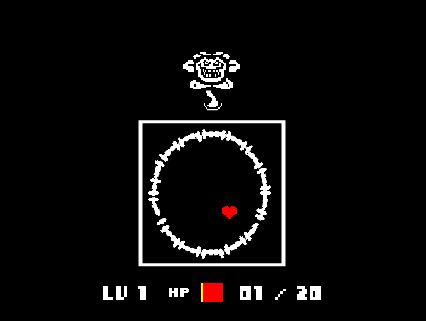

Portfolio
Undertale Rewritten
Try the game at https://scratch.mit.edu/projects/260584019/ or here!

Descrption
The game is set in the same universe as the base game of Undertale. The player is a little heart interacting with an evil flower. The goal of the game is to dodge as many of the "pellets" as possible. Every "pellet" dodged is equal to one point. The amount of pellets are randomly generated based on current score. The higher the player's score is, the difficulty gets harder up to a certain difficulty cap. The player loses once their character gets hit by any 1 "pellet"
Reflection
My partner and I created this game due to the popularity and our own enjoyment of undertale. We enjoyed the concept of a simple yet enjoyable bullet dodging game. The inspiration was of course the original game "Undertale." During development, two successful points were the creating of a circle using 50 different clones and being able to generate pellets randomly to add variation. Two obstacles were getting the music to function properly and getting the core mechanics of the game. If my partner and I had more time, we would probably add more depth to the game. We would want to possibly add a health system or more interaction with the boss itself.Important Algorithm

This is our algorithm that increases the difficulty of the game as the player's score increases. This is an algorithm because it defines steps that the game takes to decide how many objects to create. What this does is it checks what the current player's score is. Once it does that, it tries to see what range the players score is in and then clones a random number based on that range.
More Blocks
CYOA: Peppa Pig: Year of the Pig
Summary
This CYOA story is about the lovable pig, Peppa. In the story, Peppa is having a party for the new year, year of the pig. Her mom sends her on a few errands and she has to not get sidetracked or else the party wont go well.
Flow Chart

So, within the development of our program, the incremental and iterative processes that we had to go through were scattered throuought development. First off, we had to create a coherent story so we went through multiple differences in design before we found one that would be entertaining but still flow decently well. Later on in the programming, we had to make sure all our bugs were worked out. For example, we could not get an earlier decision to affect the overall ending. What we did was go through each set variable to try and figure out which needed to be called global and why. Eventually, I was able to resolve the problem, adding multiple endings to our story. Organizing the story into functions was a form of procedural abstraction because we know where everything leads and what it will run, but not exactly what it will say. Doing this made the program much easier to follow rather than having a large block of if statements that are hard to follow. I do not recall the exact name of one of the stories, but I liked this one because it was very well designed once ran. I could clearly tell when the next event started and it was easy on the eyes rather than a wall of text. Another one I liked was just unpredictable and entertaining. It was still well written but time was clearly put into the design process.